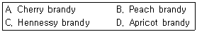
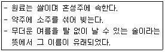
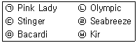
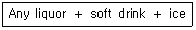
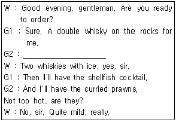
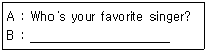
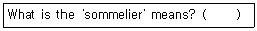

조주기능사 (2014-10-11 기출문제)
1과목: 주류학개론
1. 녹차의 대표적인 성분 중 15% 내외로 함유되어 있는 가용성 성분은?
- 카페인
- 비타민
- 카테킨
- 사포닌
(정답률: 59%)

2. 다음 중 증류주가 아닌 것은?
- 소주
- 청주
- 위스키
- 진
(정답률: 54%)
3. 다음 중 싱글 몰트 위스키가 아닌 것은?
- 글렌모렌지(Glenmorangie)
- 더 글렌리벳(The Glenlivet)
- 글렌피딕(Glenfiddich)
- 씨그램 브이오(Seagram's V.O)
(정답률: 72%)
4. 다음 중 나머지 셋과 성격이 다른 것은?

- A
- B
- C
- D
(정답률: 86%)
5. 효모의 생육조건이 아닌 것은?
- 적정 영양소
- 적정 온도
- 적정 pH
- 적정 알코올
(정답률: 77%)
6. 헤네시(Henney)사에서 브랜디 등급을 처음 사용한 때는?
- 1763
- 1765
- 1863
- 1865
(정답률: 58%)
7. 다음 중 음료에 대한 설명이 틀린 것은?
- 에비앙생수는 프랑스의 천연광천수이다.
- 페리에생수는 프랑스의 탄산수이다.
- 비시생수는 프랑스 비시의 탄산수이다.
- 셀쳐생수는 프랑스의 천연광천수이다.
(정답률: 73%)
8. 산지별로 분류한 세계 4대 위스키가 아닌 것은?
- American whiskey
- Japanese whisky
- Scotch whisky
- Canadian whisky
(정답률: 92%)
9. 다음에서 설명하는 전통주는?

- 과하주
- 백세주
- 두견주
- 문배주
(정답률: 78%)
10. 각 나라별 와인등급 중 가장 높은 등급이 아닌 것은?
- 프랑스 V.O.Q.S
- 이탈리아 D.O.C.G
- 독일 Q.m.p
- 스페인 D.O.C
(정답률: 63%)
11. Fermented Liquor에 속하는 술은?
- Chartreuse
- Gin
- Campari
- Wine
(정답률: 47%)
12. 탄산수에 키니네, 레몬, 라임 등의 농축액과 당분을 넣어 만든 강장제 음료는?
- 진저 비어(Ginger Beer)
- 진저엘(Ginger ale)
- 칼린스 믹스(Collins Mix)
- 토닉 워터(Tonic water)
(정답률: 65%)
13. 탄산음료의 종류가 아닌 것은?
- Tonic water
- Soda water
- Collins mixer
- Evian water
(정답률: 91%)
14. 증류주 1quart의 용량과 가장 거리가 먼 것은?
- 750mL
- 1000mL
- 32oz
- 4 cup
(정답률: 62%)
15. 증류주에 대한 설명으로 틀린 것은?
- Gin은 곡물을 발효, 증류한 주정에 두송나무 열매를 첨가한 것이다.
- Tequila는 멕시코 원주민들이 즐겨 마시는 풀케(Pulque)를 증류 한 것이다.
- Vodka는 슬라브 민족의 국민주로 캐비어를 곁들여 마시기도 한 다
- Rum의 주원료는 서인도제도에서 생산되는 자몽(Grapefruit)이다.
(정답률: 86%)
16. 양조주의 종류에 속하지 않은 것은?
- Amaretto
- Lager beer
- Beaujolais Nouveau
- Ice wine
(정답률: 75%)
17. 이태리 와인의 주요 생상지가 아닌 것은?
- 토스카나(Toscana)
- 리오하(Rioja)
- 베네토(Veneto)
- 피에몬테(Piemonte)
(정답률: 68%)
18. 양조주의 제조방법으로 틀린 것은?
- 원료는 곡류나 과실류이다.
- 전분은 당화과정이 필요하다.
- 효모가 작용하여 알코올을 만든다.
- 원료가 반드시 당분을 함유할 필요는 없다.
(정답률: 78%)
19. 다스카치산 위스키에 히스꽃에서 딴 봉밀과 그 밖에 허브를 넣어 만든 감미 짙은 리큐르로 러스티 네일을 만들 때 사용되는 리큐르는?
- Cointreau
- Galliano
- Chartreuse
- Drambuie
(정답률: 61%)
20. 칼바도스에 대한 설명으로 옳은 것은?
- 스페인의 와인
- 프랑스의 사과브랜디
- 북유럽의 아쿠아비트
- 멕시코의 테킬라
(정답률: 87%)
21. 증류주에 관한 설명 중 틀린 것은?
- 단식 증류기와 연속식 증류기를 사용한다.
- 높은 알코올 농도를 얻기 위해 과실이나 곡물을 이용하여 만든 양조주를 증류해서 만든다.
- 양조주를 가열하면서 알코올을 기화시켜 이를 다시 냉각시킨 후 높은 알코올을 얻은 것이다.
- 연속 증류기를 사용하면 시설비가 저렴하고 맛과 향의 파괴가 적다.
(정답률: 84%)
22. 비중이 서로 다른 술을 섞이지 않고 띄워서 여러 가지 색상을 음 미할 수 있는 칵테일은?
- 프라페(Frappe)
- 슬링(Sling)
- 피즈(Fizz)
- 푸스카페(Pousse Cafe)
(정답률: 78%)
23. 다음 중 종자류 계열이 아닌 혼성주는?
- 티아 마리아
- 아마레토
- 쇼콜라 스위스
- 갈리아노
(정답률: 45%)
24. 감자를 주원료로 해서 만드는 북유럽의 스칸디나비아 술로 유명 한 것은?
- Aquavit
- Calvados
- Eau de vie
- Grappa
(정답률: 80%)
25. 다음 중 맥주의 종류가 아닌 것은?
- Ale
- Porter
- Hock
- Bock
(정답률: 67%)
26. Draft beer 란 무엇인가?
- 효모가 살균되어 저장이 가능한 맥주
- 효모가 살균되지 않아 장기 저장이 불가능한 맥주
- 제조과정에서 특별히 만든 흑맥주
- 저장이 가능한 병이나 캔맥주
(정답률: 80%)
27. 아로마(Aroma)에 대한 설명 중 틀린 것은?
- 포도의 품종에 따라 맡을 수 있는 와인의 첫 번째 냄새 또는 향기 이다.
- 와인의 발효과정이나 숙성과정 중에 형성되는 여러 가지 복잡 다양한 향기를 말한다.
- 원료 자체에서 우러나오는 향기이다.
- 같은 포도품종이라도 토양의 성분, 기후, 재배조건에 따라 차이가 있다.
(정답률: 57%)
28. 아라비카종 커피의 특징으로 옳은 것은?
- 병충해에 강하고 관리가 쉽다.
- 생두의 모양이 납작한 타원형이다.
- 아프리카 콩고가 원산지이다.
- 표고 600m 이하에서도 잘 자란다.
(정답률: 57%)
29. 안동소주에 대한 설명으로 틀린 것은?
- 제조 시 소주를 내릴 때 소주고리를 사용한다.
- 곡식을 물에 불린 후 시루에 쪄 고두밥을 만들고 누룩을 섞어 발효시켜 빚는다.
- 경상북도 무형문화재로 지정되어 있다.
- 희석식 소주로써 알코올 농도는 20도이다.
(정답률: 65%)
30. 까베르네 소비뇽에 관한 설명 중 틀린 것은?
- 레드 와인 제조에 가장 대표적인 포도 품종이다.
- 프랑스 남부 지방, 호주, 칠레, 미국, 남아프리카에서 재배한다.
- 부르고뉴 지방의 대표적인 적포도 품종이다.
- 포도송이가 작고 둥글고 포도 알은 많으며 껍질은 두껍다.
(정답률: 53%)
2과목: 주장관리개론
31. 식음료 부분의 직무에 대한 내용으로 틀린 것은?
- Assistant bar manager는 지배인의 부재 시 업무를 대행하여 행 정 및 고객관리의 업무를 수행한다.
- Bar captain은 접객 서비스의 책임자로서 head waiter 또는 super visor라고 불리기도 한다.
- Bus boy는 각종 기물과 얼음, 비 알코올성 음료를 준비 하는 책임이 있다.
- Banquet manager는 접객원으로부터 그날의 영업실적을 보고 받고 고객의 식음료비 계산서를 받아 수납 정리한다.
(정답률: 44%)
32. Old fashioned의 일반적인 장식용 재료는?
- Slice of lemon
- Wedge of pineapple and cherry
- Lemon peel twist
- Slice of orange and cherry
(정답률: 59%)
33. 다음 중 칵테일 조주 시 용량이 가장 적은 계량 단위는?
- table spoon
- pony
- jigger
- dash
(정답률: 72%)
34. Grasshopper 칵테일의 조주기법은?
- Float &layer
- shaking
- stirring
- building
(정답률: 62%)
35. 맥주의 저장과 출고에 관한 사항 중 틀린 것은?
- 선입선출의 원칙을 지킨다.
- 맥주는 별도의 유통기한이 없으므로 장기간 보관이 가능하다.
- 생맥주는 미살균 상태이므로 온도를 2 ~3℃로 유지하여야 한다.
- 생맥주통 속의 압력은 항상 일정하게 유지되어야 한다.
(정답률: 90%)
36. 쉐이커(shaker)를 이용하여 만든 칵테일을 짝지은 것으로 옳은 것은?

- ㉠, ㉡, ㉤
- ㉠, ㉣, ㉤
- ㉡, ㉣, ㉥
- ㉠, ㉢, ㉥
(정답률: 52%)
37. 다음 중 After dinner cocktail로 가장 적합한 것은?
- Campari Soda
- Dry Martini
- Negroni
- Pousse Cafe
(정답률: 59%)
38. 조주 기구 중 3단으로 구성되어있는 스탠다드 쉐이커(Standard shaker)의 구성으로 틀린 것은?
- 스퀴저(Squeezer)
- 바디(Body)
- 캡(Cap)
- 스트레이너(Strainer)
(정답률: 81%)
39. Wine serving 방법으로 가장 거리가 먼 것은?
- 코르크의 냄새를 맡아 이상 유무를 확인 후 손님에게 확인하도록 접시 위에 얹어서 보여준다.
- 은은한 향을 음미하도록 와인을 따른 후 한두 방울이 테이블에 떨어지도록 한다.
- 서비스 적정온도를 유지하고, 상표를 고객에게 확인시킨다.
- 와인을 따른 후 병 입구에 맺힌 와인이 흘러내리지 않도록 병목 을 돌려서 자연스럽게 들어 올린다.
(정답률: 92%)
40. 주로 일품요리를 제공하며 매출을 증대시키고, 고객의 기호와 편의를 도모하기 위해 그 날의 특별요리를 제공하는 레스토랑은?
- 다이닝룸(dining room)
- 그릴(grill)
- 카페테리아(cafeteria)
- 델리카트슨(delicatessen)
(정답률: 51%)
41. 서비스 종사원이 사용하는 타월로 arm towel 혹은 hand towel이 라고도 하는 것은?
- table cloth
- under cloth
- napkin
- service towel
(정답률: 73%)
42. 술병 입구에 부착하여 술을 따르고 술의 커팅(Cutting)을 용이하게 하고 손실을 없애기 위해 사용하는 기구는?
- Squeezer
- Strainer
- Pourer
- Jigger
(정답률: 76%)
43. 일반적으로 구매 청구서 양식에 포함되는 내용으로 틀린 것은?
- 필요한 아이템 명과 필요한 수량
- 주문한 아이템이 입고되어야 하는 날짜
- 구매를 요구하는 부서
- 구분 계산서의 기준
(정답률: 64%)
44. 다음과 같은 재료로 만들어지는 드링크(Drink)의 종류는?

- Martini
- Manhattan
- Sour Cocktail
- Highball
(정답률: 66%)
45. 정찬코스에서 Hors d' oeuvre 또는 soup 대신에 마시는 우아하고 자양분이 많은 칵테일은?
- After dinner cocktail
- Before dinner cocktail
- Club cocktail
- Night cap cocktail
(정답률: 39%)
46. 바에서 사용하는 House brand의 의미는?
- 널리 알려진 술의 종류
- 지정 주문이 아닐 때 쓰는 술의 종류
- 상품(上品)에 해당하는 술의 종류
- 조리용으로 사용하는 술의 종류
(정답률: 72%)
47. Appetizer course에 가장 적합한 술은?
- Sherry wine
- Vodka
- Canadian whisky
- Brandy
(정답률: 76%)
48. 올드 패션(Old fashioned)이나 온더락스(On the rocks)를 마실 때 사용되는 글라스(Glass)의 용량으로 가장 적합한 것은?
- 1 ~ 2 온스
- 3 ~ 4 온스
- 4 ~ 6 온스
- 6 ~ 8 온스
(정답률: 45%)
49. 잔(Glass) 가장자리에 소금, 설탕을 묻힐 때 빠르고 간편하게 사용 할 수 있는 칵테일 기구는?
- 글라스 리머(Glass rimmer)
- 디켄터(Decanter)
- 푸어러(Pourer)
- 코스터(Coaster)
(정답률: 82%)
50. 파인애플 주스가 사용되지 않는 칵테일은?
- Mai-Tai
- Pina Colada
- Paradise
- Blue Hawaiian
(정답률: 43%)
3과목: 고객서비스영어
51. Which one is the classical French liqueur of aperitifs?
- Dubonnet
- Sherry
- Mosell
- Campari
(정답률: 28%)
52. Which of the following is correct in the blank?

- The same again?
- Make that two.
- One for the road.
- Another round of the same.
(정답률: 63%)
53. 다음 ( ) 안에 들어갈 가장 적당한 표현은?
- asked
- will ask
- ask
- be ask
(정답률: 67%)
54. 다음 물음에 가장 적합한 것은?
- Ballentine's
- J&B
- Jim Beam
- Cutty Sark
(정답률: 71%)
55. 다음 밑줄 친 내용의 뜻으로 적합한 것은?
- 미리
- 나중에
- 원래
- 당장
(정답률: 73%)
56. What is the liqueur made by Scotch whisky, honey, herb?
- Grand Manier
- Sambuca
- Drambuie
- Amaretto
(정답률: 75%)
57. 다음 질문의 대답으로 가장 적절한 것은?

- I like jazz the best.
- I guess I'd have to say Elton John.
- I don't really like to sing.
- I like opera music.
(정답률: 79%)
58. 'Can you charge what I've just had to my room number 310?' 의 뜻은?
- 내방 310호로 주문한 것을 배달해 줄 수 있습니까?
- 내방 310호로 거스름돈을 가져다 줄 수 있습니까?
- 내방 310호로 담당자를 보내 주시겠습니까?
- 내방 310호로 방금 마신 것의 비용을 달아놓아 주시겠습니까?
(정답률: 77%)
59. When do you usually serve cognac?
- Before the meal
- After meal
- During the meal
- With the soup
(정답률: 64%)
60. Choose the best answer for the blank.

- head waiter
- head bartender
- wine waiter
- chef
(정답률: 65%)